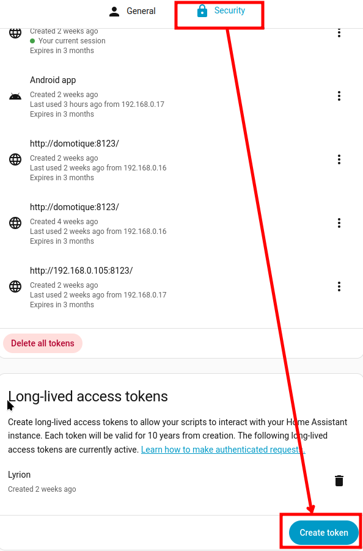
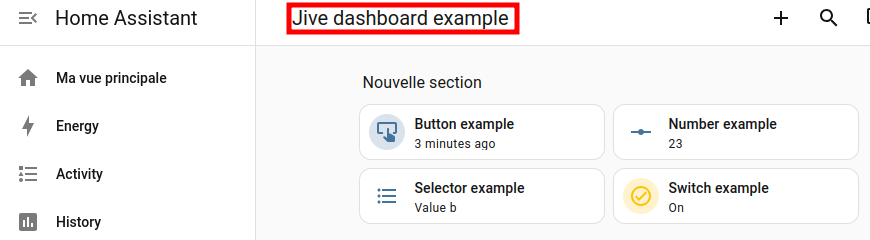
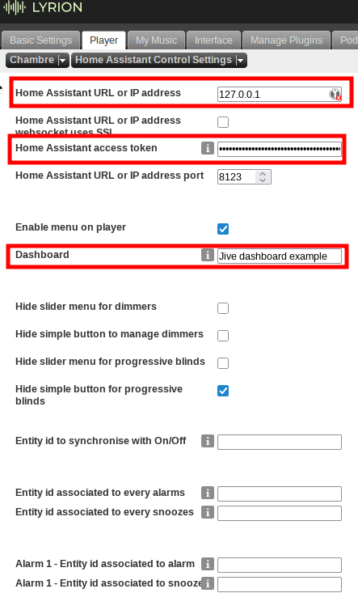
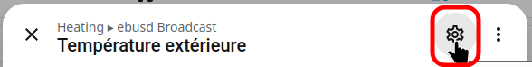
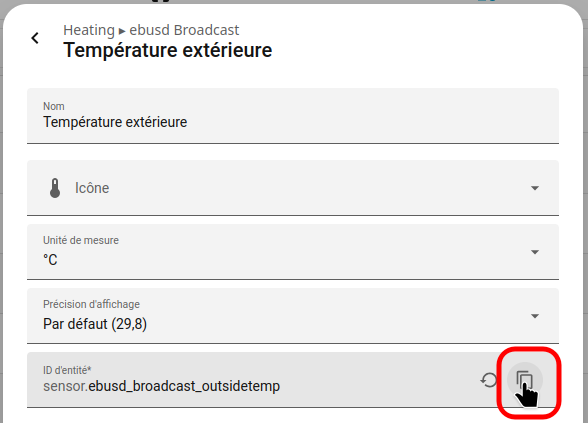
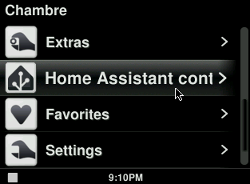
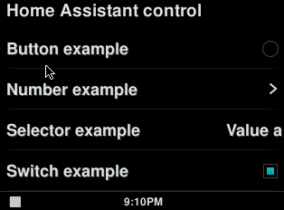

Home Assistant Control
This is a Lyrion (Squeezebox / Logitech Media Server) plugin for controlling Home Assistant entities from your Jive based player screen (Squeezebox radio, Squeezebox Touch, UE Smart Radio with squeezebox firmwareand Jive Lite and its derivatives).
The plugin can control lights, covers, switches, button, boolean, select and number inputs.
Installation
To install the plugin, add the repository URL https://guillaumezin.github.io/HAControl/repo.xml to your squeezebox plugin settings page then activate the plugin.
To install the Custom Clock, Custom Clock Helper and SuperDateTime (weather.com version) plugins, add the repository URL https://sourceforge.net/projects/sdt-weather-com/files/repo.xml to your squeezebox plugin settings page then activate the plugins.
Usage
First you must create and copy in Home Assistant an access token. You can generate one in the bottom of your Home Assistant profile security panel

You must also create a Home Assistant dashboard where you want to grab entities to get them on the player screen.

For each player, go to the player settings page and choose Home Assistant Control settings. Set the various parameters to your need and your liking. Pay attention to Home Assistant URL, the access token and the dashboard name you got previously.

You can also associate alarms and snoozes with Home Assistant devices (switch commands only). This can be useful to activate Home Assistant automation through a switch input for instance.
You can associate a Home Assistant entity that will turn on and off at the same time as a player.
If you have Custom Clock, Custom Clock Helper and SuperDateTime (weather.com version 5.9.42 onwards), Home Assistant Control can expose values based on devices state to Custom Clock Helper. The formatting is explained in Home Assistant control settings settings of the player settings page.


Home Assistant control should appear in home menu of your Jive based players.


Limitations
If an entity state changes while Home Assistant control is opened on your player, the change will not reflect until you go back to main screen and reopen Home Assistant control menu.